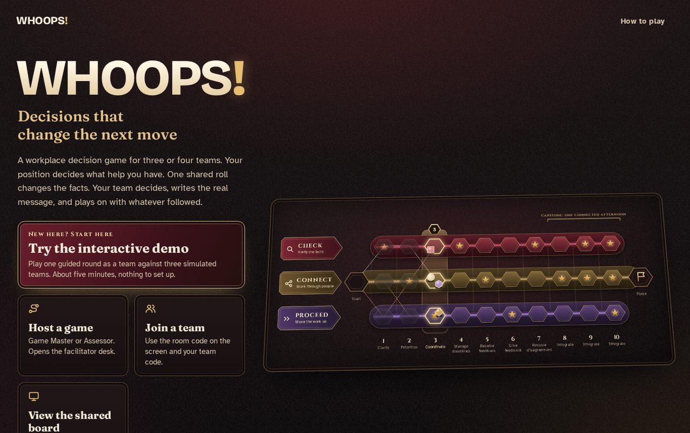
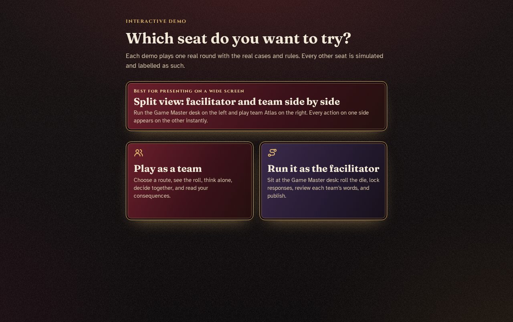

WHOOPS!
Decisions that change the next move
A competitive board game that teaches new employees to decide well when the request is incomplete. Three or four teams, ten rounds, one shared die that changes the facts for everyone at once — and the message a team writes is what gets assessed.
Overview
WHOOPS! is a competitive board game that teaches new employees to decide well when a request is incomplete. Three or four teams, ten rounds, one shared die that changes the facts for everyone at once.
Each round, a team picks a lane that decides what help it has, then writes the actual message it would send. A facilitator judges those words against two published criteria — no AI grading, no individual scoring.
The Problem
New employees rarely fail because they lack knowledge. They fail on judgment under incomplete information: acting on an assumed deadline, going quiet instead of asking the one question that would unblock them, or handing over work a colleague can't continue without guessing.
These cost rework and credibility, and a quiz can't detect them. You only see them in what someone writes and decides.
Audience & Objectives
Best fit: new employees in onboarding or induction, in their first weeks. Also works for graduate programmes and teams where unclear requests and weak handoffs keep causing rework. Three or four teams of 2–4, one facilitator, one device per team.
The objectives sit in the upper levels of Bloom's, because every round ends in something produced and a judgment call:
- Understand an unclear request and state what's actually being asked.
- Apply the right channel — check, or hand off — for the situation.
- Analyse confirmed facts from assumptions after conditions change.
- Evaluate whether a plan still fits the time that remains, and decide what to release.
- Create the actual message, agreement, or handoff note — every round.

How a Round Works
Pick a route
CHECK, CONNECT, or PROCEED — your lane decides what help you have. Routes stay hidden from rivals.
The die changes the facts
One roll, one event, every team. It never awards points — it changes what a good plan must handle.
Think alone, then agree
A private first judgment, then the team writes the real message and picks the next step.
All results publish at the same moment. Position, resources, and unfinished work carry into the next round — and in the final three, into a connected capstone.
Assessment & Fairness
This is what separates it from a quiz. Four points a round, plus one:
Rules + human judgment
Two points from a deterministic engine, two from a facilitator reading the team's own words against published criteria.
HOLD instead of guessing
An unsure facilitator pauses publication rather than inventing a score. HOLD is never turned into a zero.
The bonus needs evidence
Picking the right follow-through in a dropdown earns nothing unless it also appears in the team's own message.
A score describes a team, never a person
No individual scoring. Private notes stay private. Style is never marked, and participants are told so before round one.

Design Decisions
Every mechanic does a teaching job:
Authentic assessment
The output is the artefact the job requires, so practice and evidence are the same act.
Varied conditions
The same objective returns under different facts — which is what makes it transfer rather than become a script.
Think alone, then together
A private first judgment protects independent thinking before the loudest voice sets the answer.
Psychological safety by design
No individual scores, no speed bonuses, no streaks — nothing a learner can't control is ever scored.
Play & Explore
The interactive demo runs one guided round in about five minutes. The field guide is a 26-station map of the design, facilitation, and engineering. Both open right here inside the portfolio.
Outcome & Build
A verified functional prototype, ready for a pilot — built as a static web app (React, TypeScript, Vite) where the facilitator's browser is the single source of truth and team devices connect peer-to-peer. No database, no accounts, no central store of anyone's work. 70 automated tests, including full ten-round games replayed on every run.
What's proven, and what isn't. Verified: the rules, the privacy model, the facilitation flow, the full game loop, and recovery from failure. Not yet verified: learning gain and transfer with real learners. I published that line rather than hiding it — a product that names its limits reads as confidence, not doubt.
Reflection
The hardest and best decision was refusing to score individuals or reward speed. It would have been easy to add streaks and badges. But the skill being taught is judgment under pressure, and the moment you score the wrong things, you teach the wrong things. Designing what not to measure turned out to matter as much as designing what to.